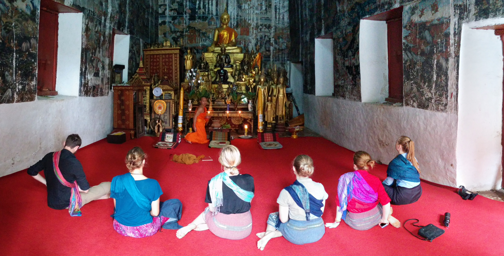

Date 11 March 2016
Thoughts on Medidation
My thoughts on meditation were not changed by the content of Search Inside Yourself, Chapter 2. I have meditated in the past, and believe it is just like exercise, only for the mind. If it can become a regular habit (the hard part), it can reduce stress, and make you an happier person. I really do believe that.
Did any of the suggested mediation techniques stand out to you?
Not particularly, as they are already techniques I am aware of. I prefer to sit in a comfortable position, and focus on my breathing. Allowing feelings to come and go, noises and surrounding distractions to wash through me. I liked the analogy in Search Inside Yourself that described emotions as a ball you can observe, play with, and put down. But only if you accept their existence in the firs place.
Here's a picture of me and some fellow teachers meditating with one of my students in Luang Prabang, Laos. It was an amazing experience!
